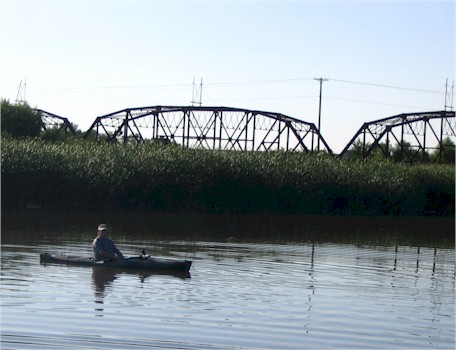
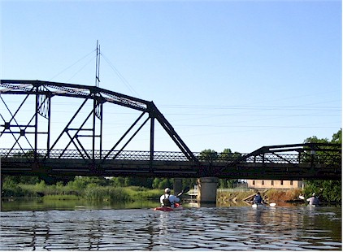
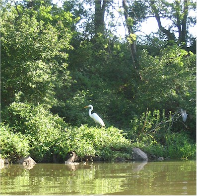
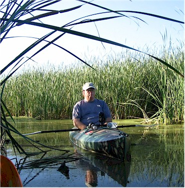
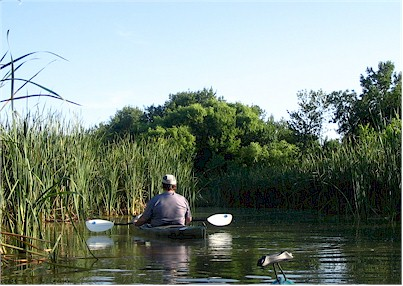
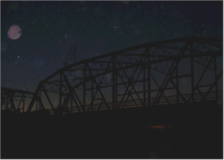

July 2006
| I spent a nice evening out kayaking with Bill
Becquart and some other people from the OKC
Outdoor Network. We saw some deer very close to us, one of our
crew got to see a fawn up close. We also saw two beavers - one of
them was out of the water until we got close. And of course,
thousands of birds. It was a really neat trip. You wouldn't
think you could get such a wilderness feeling that close to town but once
you wind your way back off the highway you felt miles from the 'real
world'. It was neat. |
|
| Boy, it was hot when we started out. It was made worse
because I had the bright idea to go running before we left. I had
seen a bank clock that said it was 107 right before I started running.
It was not my smartest decision! The first half hour of the paddle was
pretty hot, but once we got back in there it was shady and much cooler.
|
|
 |
 |
| Here Bill waits for the rest of us to get going. | And we're off! |
 |
 |
|
Birds and Becquarts |
|
 |
 |
| This was one of the narrow corridors where we saw the deer | It was dark and the moon was nearly full when we finished that night. |